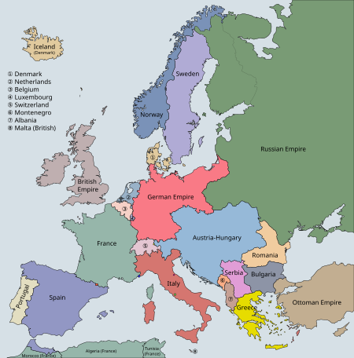

… historia w wielkim skrócie, zabili go i uciekł…
Europa i Azja od 1914 roku do współczesności. Cztery mapy polityczne SVG, działające offline, z przełączaniem bez odświeżania, wykazem państw i kalendarium.
Atlas historyczny

Otwórz mapę w pełnym rozmiarze
Państwa i nazwy historyczne dla wybranej mapy
Poniższe polskie nazwy są czytelnym uzupełnieniem mapy, a nie podpisami umieszczonymi bezpośrednio na pliku SVG. Nie oznaczają, że wszystkie wymienione kraje mieszczą się w kadrze mapy.
Uwaga: źródłowe mapy pochodzą z różnych opracowań i mają różne style. Nie zostały sztucznie przerobione na jednolitą kartografię ani przedstawione jako mapa każdego roku 1914–2026.
Kalendarium i wyszukiwarka
Źródła i prawa autorskie
Mapy SVG są osobnymi plikami w folderze mapy-historyczne. Według opisu materiałów pochodzą z Wikimedia Commons. Przed publiczną publikacją należy zachować wymagane oznaczenie autorów i licencji dla każdej mapy. Szczegóły znajdują się w metadanych SVG oraz na stronach poszczególnych plików Wikimedia Commons.
Kalendarium to wybór wydarzeń, nie pełna historia. Granice i nazwy w okresach przejściowych mogą wymagać dokładniejszego datowania.